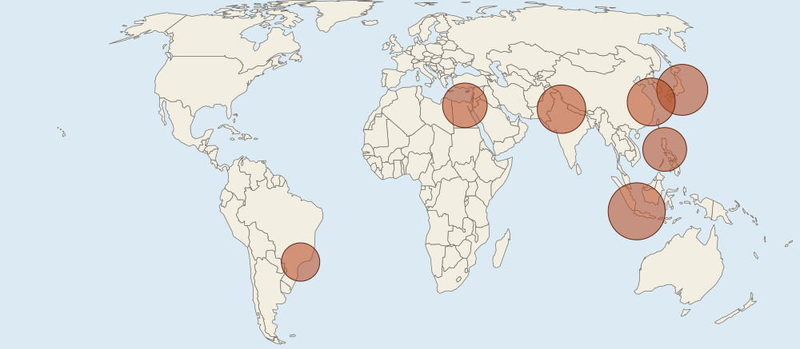

The question
Name: ______________________ Date: ____________ Very large cities, city size and the urban hierarchy (7 points)
Map
Source 1: Population of selected very large cities, 2025

Urban area population, 2025
- 102040million people (circle area shows the value)
Data
Source 2: The five largest cities of Country Z
| City | Population (millions) | Offices of global firms |
|---|---|---|
| Z1 (capital and main port) | 10.0 | 85 |
| Z2 | 2.0 | 9 |
| Z3 | 1.6 | 4 |
| Z4 | 1.2 | 2 |
| Z5 | 1.0 | 1 |
Invented data for practice.
(A) Identify Using Source 1, identify the world region where most of the very large cities shown are located. [1 point]
Identify means: Give the information asked for: a word or short phrase can earn the point, with no reasons needed.
(B) Describe Using Source 1, describe the difference between a megacity and a metacity, using one city shown as an example. [1 point]
Describe means: Give the relevant characteristics: what it is like, where and how much. A name alone earns nothing.
(C) Explain Explain why most of the very large cities shown in Source 1 are in lower- and middle-income countries. [1 point]
Explain means: Say how or why, with every link of the chain: a cause, then because or so, then its effect, tied to the place or data asked about.
(D) Explain Explain one limitation of Source 1 for comparing the populations of the world's very large cities. [1 point]
Explain means: Say how or why, with every link of the chain: a cause, then because or so, then its effect, tied to the place or data asked about.
(E) Explain Using Source 2, explain whether Country Z's cities fit the rank-size rule or show a primate city. [1 point]
Explain means: Say how or why, with every link of the chain: a cause, then because or so, then its effect, tied to the place or data asked about.
(F) Explain Using Source 2, explain how Z1's position in the urban hierarchy can affect smaller cities in Country Z, linking the global and national scales. [1 point]
Explain means: Say how or why, with every link of the chain: a cause, then because or so, then its effect, tied to the place or data asked about.
(G) Explain the degree Using Source 2, explain the degree to which a primate city such as Z1 benefits the economic development of the whole country. [1 point]
Explain the degree means: State the degree first (to a high, moderate or low degree), then explain why with evidence.